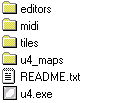

Town Editor
PAGE - 1 -
General Background - page 1
This document describes how to use the town editor
The town editor is a stand alone exe that was written in VB6 and must reside in the town_editor subdirectory which resides in the editors/town_editor/ directory. See the diagrams below -
Or another view -

The function of this program enables one to be able to: (1) Edit and Create new TOWNS,VILLAGES,CASTLES, etc.. (2) Create, Edit and Manage NPC's and Monsters behavior (3) Manage the DIALOG of NPC's (4) Manage Merchants (shopkeepers), prices, items and messages
In order to use this program to its fullest potential, several samples are offered to go by.
We will start off by describing the various features -
Run the program.
*****************************************************************************************************************Under File there are IMPORT, UPDATE, SAVEAS QUIT
IMPORT - This imports a *.ULT, a Ultima IV MAP file which contains the MAP AND NPC location data The import ALSO imports the *.TLK file which contains ALL the NPC dialog. This is automatically loaded. The two files MUST have the same primary filename. i.e Britain.ult and Britain.tlk
UPDATE - This is the equivalent of save. It will update the *.ult and *.tlk. It overwrites existing data.
SAVE AS - You can save current data as another *.ult. This is a good way to create a copy of a town and it's NPC data and adjoining *.tlk file.
QUIT - Quits with no save *****************************************************************************************************************
Under Map - PAINT MAP WITH CURRENT ICON - This paints the WHOLE 32x32 map with currently selected icon. To choose a icon, click on the icon picture and select a new one. That one becomes active. *****************************************************************************************************************
Under Mode - PAINT MODE, NPC MODE - This simple toggles between the two. If you are in PAINT MODE, you can only paint, but in NPC MODE, you can edit NPC data, positions, dialog and merchant data - basically anything to do with NPC's *****************************************************************************************************************
Under NPC - ADD NPC, ADD AGGRO MOB, ADD LORD BRITISH, ADD HAWKIND, ADD MERCHANT
ADD NPC - adds a NEW NPC to the town. If you have >16 NPC's then an error is generated because this adds a NPC that has some dialog and only 16 NPC's can have dialog per town. There is a limit of 32 NPC's however, just 16 have dialog and 16 don't, so if you want to add a non talking NPC (that can be aggressive) use ADD AGGRO MOB
ADD AGGRO MOB - Adds a aggressive MOB, but can be and usually is edited to be non aggro. This NPC has NO dialog
ADD LORD BRITISH, ADD HAWKIND - adds this incidence of either character. They are NOT unique because Lord B. can be found in British Castle and your custom town. It's possible he travels and lives in different areas.
ADD MERCHANT - Adds a UNIQUE merchant to you map. There are several classes to choose from *****************************************************************************************************************
Redraw NPC button - This button draws the NPC's as they exist in this map. If you are in NPC MODE you can click on a NPC and obtain info about it.
ICON SELECTED - This icon is the current selected icon. By clicking on it you get a window of more icons to choose from.
Current y and x position id. - this represents in map coordinates, your position under the cursor. Maps are 32x32
Current Map id - represents the currently loaded map (*.ult)
*****************************************************************************************************************